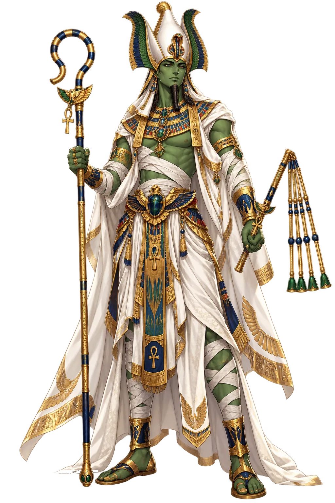
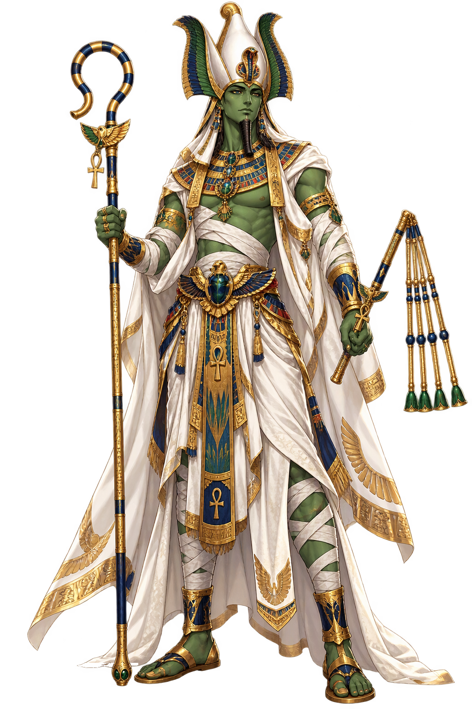

The Living Myth
Afterlife, Resurrection, Vegetation · The Dead, Resurrection, the Nile's Return · Mighty One

Stories of Wsjr
The Osiris cycle is the best-preserved Egyptian myth, known from the Pyramid Texts onward: the good king murdered by his brother, the faithful wife who recovers him, the son who avenges him. It is simultaneously a story about kingship, about the flood that dies and returns, and about every human being who hoped to be judged worthy.
The earliest sources already presuppose the story: Osiris ruled as a beneficent king until his brother Seth, envious of his power, contrived his death — in the classical telling (Plutarch’s De Iside et Osiride, the fullest narrative we have) sealed in a chest and thrown into the Nile, the river carrying him to Byblos where a tamarisk grew to engulf the coffin.
Isis searched for the body, recovered it from Byblos, and hid it — but Seth found it by night, cut it into fourteen pieces, and scattered them through Egypt. Isis and Nephthys wandered the land gathering the fragments. Every place that claimed a fragment became an Osiris sanctuary; the myth is a map of Egyptian pilgrimage.
Anubis conducts the dead to the Hall of Two Truths, where the heart is set on the scale against the feather of Maat and the tally is read aloud by Thoth. Wsjr, enthroned in the next chamber, receives those who pass. The formula “I am Osiris” in the Book of the Dead identifies the deceased with him — his resurrection becomes the template of theirs.
Isis, by magic, conceived a son on the briefly reanimated body: Horus, raised in secret in the marshes of Chemmis, who grew to challenge Seth for the throne. The tribunal of the gods awarded Egypt’s rule to Horus and the underworld’s to Osiris — the mythic charter for the division between the living king and his dead father.
The First Mummy, King of the Underworld
Wsjr — Osiris to the Greeks — is the god who died and returned, and in returning became the pattern every Egyptian hoped to follow. Murdered by his brother, reassembled by his wife, enthroned as judge of the dead, he rules the Duat while his son Horus rules the living world above.
Sovereign of the underworld and judge of every soul weighed against the feather of Maat.
The drowned, dismembered god rewrapped by Anubis — the prototype of all mummification.
Lord of vegetation and the inundation; his green or black skin is the fertile flood-plain.
Posthumous father of the sky-falcon; the succession struggle with Seth is Egypt’s central myth.
From the original script to the living URL
𓁥
The name in its original Egyptian form. Wsjr (𓁥) is attested in the source tradition — “Mighty One (Egyptian wsjr)”. Its original diacritics and script distinctions carry the full phonetic and orthographic weight of the source tradition.
osiris
The plain osiris form shares the canonical spelling. Because this name is already written in Latin letters, no recovered diacritics are required; capitalization follows the proper-noun convention.
Wsjr
The canonical spelling of Wsjr needs no recovered marks. Its value is consistent citation, transparent provenance, and a stable digital home for the scholarly record. The address is readable as-is to both DNS and humanity.
Wsjr.com
This restoration is written entirely in ASCII letters — no special domain encoding stands between Wsjr and the DNS. The domain reads identically to machines and to human eyes.
The attested spelling family of Wsjr — 2 attested forms of this name.
Wsjr
Restores 𓁥. The full canonical restoration. wsjr.com is not in the PuniCodex collection — it is watched for release; if it drops, this temple upgrades to an owned flagship. Attested by Faulkner, Wb.
Osíris
Restores 𓁥. Acute on iota: alternate stress position. Attested by Faulkner, Allen, Middle Egyptian.
How Wsjr was spoken
How Wsjr travels from ancient script to the modern URL
Egyptian Wsjr; the vocalisation is unknown. The name may be related to wsjr “mighty one" or to a compound with the throne determinative.
The lore you have read is the living myth. Extended Lore opens the scholarly vault beneath it: the cult and its material remains, a history of the image, the name after antiquity, a meditation on what the name still means, and the full scholarly apparatus — etymology, orthography, sources.
Enter Extended Lore